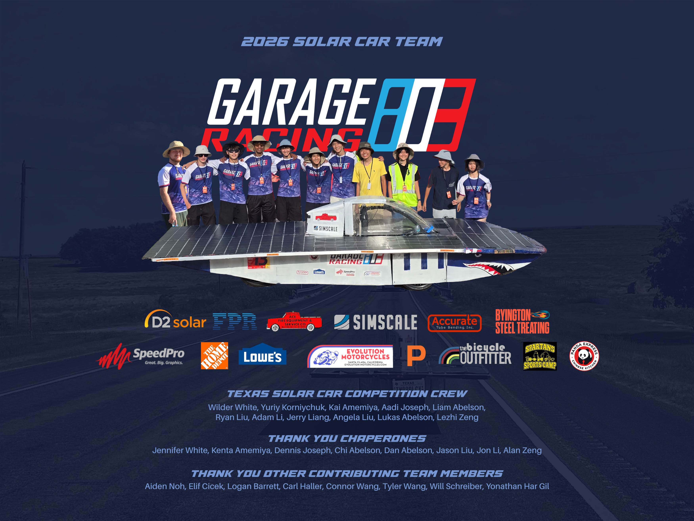

Thank you supporters!
07/23/2026

Today marks the end of the 2026 Texas Solar Car Competition, and also marks two years of us building and racing solar cars. We would like to thank all the students who spent months working on all the different aspects of building the cars, including the early season supporters who helped create a draft of the car designs. Additionally, thank you to all of our sponsors who provided us with donations and lots of car parts to work with, such as the battery and solar panels that helped make our build possible. But most importantly, thank you to all the families who helped plan our participation in the competition in advance through arranging flights, lodging, meals, transportations, and purchasing last minute materials.
Regardless of when we plan to compete in the Solar Car Challenge again, I would like to point out how far we have come as a team, and to take the time to look back at all of our progress. We started off as two co-founders: Ryan Liu and Tyler Wang, who are interested in motorsports and formed this solar car club as part of our school. Over time, more students who are interested in cars & engineering joined, which expanded our team and deemed our 2025 solar car build possible. Our team eventually became an non-profit organization seperate from our school to overcome logistical issues. After scoring 3rd place in the Classic Division thanks to all the support from the families who came to help, we were able to spread the word through giving presentations in many STEM classes and recruit more students to our team.
As we eventually became a non-profit organization right before the build phase of our 2026 Solar Car, Mako, we were able to reach out to many shops through phone calls and in-person visits, and build connections with them throughout our project. We were also lucky to have MVHS Robotics who were willing to share part of their large workspace with us for a while. With all this full-time support from all of our teammates, families, and sponsors, our solar car was able to have a better balance and a higher testing speed. While it is not known when exactly will be our next time competing, we would like to take some time to reflect upon everything that has been created so far, and it was only because of you that made it possible.